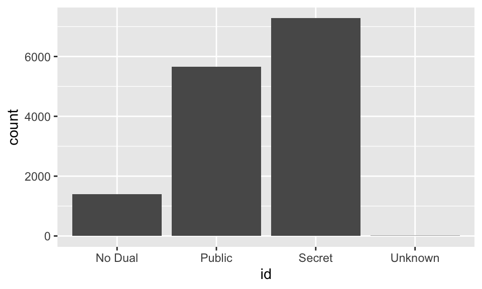

Exploring categorical data
In this tutorial we’ll learn about summarizing and visualizing data. Sometimes, we refer to the techniques covered in this tutorial as exploratory data analysis or EDA.
EDA is all about learning the structure of a dataset through a series of numerical and graphical techniques. When you do EDA, you’ll look for both general trends and interesting outliers in your data. You’ll also generate questions that will help inform subsequent analysis.
The emphasis of the first two lessons is on visualization: how to create and interpret graphical displays of your data. The third lesson focuses on numerical summaries of distributions and utilizes a simple, but powerful coding paradigm in R. We end with a case study that will allow you to synthesize these concepts and apply them to a more complex dataset that contains information on the characteristics of email that are associated with it being spam.
Before beginning the tutorial, we recommend you have some exposure to the R language and that you’ve taken the Introduction to data tutorial in this series.
Let’s get started.
Introduction
In this tutorial, you’ll be exploring data from a wide range of contexts. The first dataset comes from comic books. Two publishers, Marvel and DC, have created a host of superheroes that have made their way into popular culture. You’re probably familiar with Batman and Spiderman, but what about Mor the Mighty?
The comics dataset has information on all comic characters that have been introduced by DC and Marvel. Let’s take take a look at the dataset and explore it.glimpse(comics)At the top the output tell us the dimensions of this dataset: over
15,000 cases and 11 variables. With one exception (appearances) we see
that that all variables are characters, or of the chr data
type. These are variables that we could potentially consider
categorical, as they all have a finite number of levels.
The first case in the dataset is Peter Parker, alias: Spiderman,
where his alias and character name are included in the first variable
name. The second column, id, shows that Peter
Parker’s personal identity is kept secret, and the third column tell us
that his alignment is good; that he’s a superhero, not a
super villain.
We can learn the different values of a particular character variable
by using the distinct() function. It’s clear that the
alignment variable can be “good” or “neutral”, but what other values are
possible? Here, we pipe the comics data into the
distinct() function, and then insert the align
column into the distinct() function.
comics |>
distinct(align)Inspecting the resulting table, we learn that there are in fact four possible alignments, “Good”, “Bad”, “Neutral”, and “Reformed criminals”. Good thing we checked that! If we do the same for identity, we learn that there are four possible identities.
comics |>
distinct(id)A common way to represent the number of cases that fall into each combination of levels of two categorical variables, such as these, is with what’s called a “contingency table.” Creating a contingency table requires three steps:
- use the
count()function to count the number of observations - specify the variables you are interested in inside
the
count()function
# to get the long table
comics |>
count(align, id)- pivot the table from its current “long” format to a “wide” format
using the
pivot_wider()function
# to get a wider table
comics |>
count(align, id) |>
pivot_wider(names_from = id, values_from = n)The first two steps should look familiar to you, but the third step
is a bit overwhelming. What we are trying to accomplish is to take the
long table that is output from the count() function and
make it into a format that is more familiar.
We want for the values of align to be in the rows and
the values of id to be in the columns. We can use the
pivot_wider() function to “pivot” our table so that it has
this form, by moving the id variable to the columns, and
filling the values of the table with the count variable
(n). The names_from argument tells R where the
names of the new columns are coming from (i.e. what variable), and the
values_from argument tells R where the values in the table
are coming from. Here, the values we want in our table are stored as a
variable labeled n in our table.
The output tells us that the most common category, at a count of 4352, was “Bad” characters with “Secret” identities.
While tables of counts can be useful, you can get the bigger picture by translating these counts into a graphic. The graphics that you’ll be making in this tutorial utilize the ggplot2 package, which you got a glimpse of in the previous tutorial. Every ggplot requires that you specify three elements:
- the dataset
- how the variables you are interested in are plotted (aesthetically)
- layers that describe how the data are represented (e.g. points, lines, histograms)
Generally, your ggplot() will look something like this,
where the dataset is the first argument in the ggplot()
function. Next, the variables we are interested in plotting are found
inside the the aes() function, which stands for aesthetics.
Finally, we specify the geom function to use when plotting
the data.
ggplot(data = [DATASET], aes(x = [X VARIABLE],
y = [Y VARIABLE],
fill = [COLOR VARIABLE])) +
geom_***() Here, we’re interested in the relationship between two categorical
variables, which is represented well by a stacked bar chart. In a bar
chart, we plot the counts or frequencies of different levels of a
categorical variable, by specifying the categorical variable we want to
be on the x-axis, and adding a geom_bar() layer to the
plot.
ggplot(comics, aes(x = id)) +
geom_bar() A stacked bar chart adds another layer to the plot, by dividing each
bar into different levels of another variable. This coloring of the bars
comes from adding a second categorical variable into the
fill argument of the aes() function. This
looks something like this:
ggplot(comics, aes(x = id, fill = align)) +
geom_bar() Let’s look carefully at how this is constructed: each colored bar segment actually corresponds to a count in our table, with the x-axis and the fill color indicating the category being plotted. Several things pop out, like the fact that there are very few characters whose identities are unknown (since it’s nearly flat). The single largest bar segment corresponds to the most common category: characters with secret identities that are also bad. We can look across the identity types and realize that bad is not always the largest category. This indicates that there is indeed an association between alignment and identity.
Finally, add position = "dodge" as an argument in your
geom_bar function, and run the code to get another view of
the bar chart!
ggplot(comics, aes(x = id, fill = align)) +
geom_bar() ggplot(comics, aes(x = id, fill = align)) +
geom_bar(position = "dodge") That should be enough to get started. Now it’s your turn to start exploring the data.
Bar chart expectations
Suppose you’ve asked 30 people, some young, some old, what their preferred flavor of pie is: apple or pumpkin. Your data could be summarized in a side-by-side barchart. Here are three possibilities for how it might look.
Hint: Which plot shows a similar proportion of people who like apple (or pumpkin) pies in each of the two age groups?
Contingency table review
In this lesson you’ll continue working with the comics
dataset introduced previously. This is a collection of characteristics
on all of the superheroes created by Marvel and DC comics in the last 80
years.
Let’s start by creating a contingency table, which is a useful way to
represent the total counts of observations that fall into each
combination of the levels of categorical variables. Make sure the
contingency table has the different levels of gender in the
rows, and the different levels of align in the columns.
# Create a 2-way contingency table
comics |>
count(___, ___) |>
pivot_wider(names_from = ___, values_from = ___)Your table should look like the one below. See if you can recreate it!
# Create a 2-way contingency table
comics |>
# you want a count of variables `align` and `gender`
count(___, ___) |>
# The names of columns are in the `align` variable
# Have a look at the previous example!
pivot_wider(names_from = ___, values_from = ___)Side-by-side barcharts
While a contingency table represents the counts numerically, it’s often more meaningful to represent them graphically.
Here you’ll construct two side-by-side barcharts of the
comics data. This exercise will show you that often there
can be two or more options for presenting the same data. Passing the
argument position = "dodge" to geom_bar()
tells the function that you want a side-by-side (i.e. not stacked)
barchart.
To create these plots, let’s carry out the following steps:
- create a side-by-side barchart with
alignon the x-axis, andfillthe bars with thegenderof the character
- create another side-by-side barchart with
genderon the x-axis, andfillthe bars with thealignment of the character
# Create side-by-side barchart of alignment by gender
ggplot(___, aes(x = ___, fill = ___)) +
geom_bar(___)
# Create side-by-side barchart of gender by alignment
ggplot(___, aes(x = ___, fill = ___)) +
geom_bar(position = ___)# Create side-by-side barchart of alignment by gender
ggplot(comics, aes(x = align, fill = gender)) +
geom_bar(position = "dodge")
# Create side-by-side barchart of gender by alignment
ggplot(___, aes(x = ___, fill = ___)) +
geom_bar(position = ___)# Create side-by-side barchart of alignment by gender
ggplot(comics, aes(x = align, fill = gender)) +
geom_bar(position = "dodge")
# Create side-by-side barchart of gender by alignment
ggplot(comics, aes(x = gender, fill = align)) +
geom_bar(position = "dodge")In many visualizations you make, you may be interested in changing
the axis labels on the plot. Here, the axis labels of “gender” and
“align” could use some spicing up, to be more descriptive. To change the
labels of a ggplot(), you add (+) a
labs() layer to the plot, where you can specify the
x, y, and fill labels, as well as
the plot’s title.
ggplot(comics, aes(x = gender, fill = align)) +
geom_bar(position = "dodge") +
labs(x = "Character's Sex",
fill = "Alignment of Character",
y = "Number of Characters") Bar chart interpretation
Counts vs. proportions
You may have noticed in the last exercises that sometimes raw counts of cases can be useful, but often it’s the proportions that are more interesting. We can do our best to compute these proportions in our head or we could do it explicitly in R.
From counts to proportions
Let’s return to our table of counts of cases by identity and
alignment. If we wanted to instead get a sense of the proportion of all
cases that fell into each category, we can modify our previous table. We
will need to add a column that calculates the proportion of total
observations that were observed in each combination of id
and align.
After counting the number of observations at each level of
id and align, we use the mutate()
function to calculate the proportion of observations that fell in those
levels. We save these proportions into a new variable named
prop. Similar to before, we then pivot our table from long
to wide, but here we need to specify what columns we are interested in
pivoting. This is because we have one additional column in our dataframe
which we are not interested in including in our table (n).
To select variables, we specify a vector of column names to the
id_cols argument, excluding any variables used in
names_from and values_from.
comics |>
count(id, align) |>
mutate(prop = n / sum(n)) |>
pivot_wider(id_cols = id,
names_from = align, values_from = prop)| id | Bad | Good | Neutral |
|---|---|---|---|
| No Dual | 0.03034 | 0.042 | 0.02518 |
| Public | 0.14165 | 0.190 | 0.06263 |
| Secret | 0.28728 | 0.160 | 0.06033 |
| Unknown | 0.00049 | NA | 0.00014 |
In the table, we see that the single largest category are characters that are bad and secret at about 29% of characters.
Also note that because these are all proportions out of the whole dataset, the sum of all of these proportions is 1.
Conditional proportions
If we’re curious about systematic associations between variables, we
should look to conditional proportions. An example of a conditional
proportion is the proportion of public identity characters that are
good. To build a table of these conditional proportions, we need to
specify a grouping variable before we calculate the
proportions. We perform this grouping with the group_by()
function you saw in the last tutorial.
We see here that around 57% of all secret characters are bad. Because we’re conditioning on identity (the value in the rows), every row now sums to 1, since 100% of the identities in each row are split between the three alignments.
Condition on the rows (i.e. rows sum to 1)
comics |>
count(id, align) |>
group_by(id) |>
mutate(prop = n / sum(n)) |>
pivot_wider(id_cols = id,
names_from = align, values_from = prop)| id | Bad | Good | Neutral |
|---|---|---|---|
| No Dual | 0.31 | 0.43 | 0.26 |
| Public | 0.36 | 0.48 | 0.16 |
| Secret | 0.57 | 0.32 | 0.12 |
| Unknown | 0.78 | NA | 0.22 |
To condition on the columns rather than the rows, we change the
variable we are grouping. To condition on the columns, we
group_by() the align variable. After
conditioning on the columns, we now see that the columns sum to one.
Also, we learn, for example, that the proportion of bad characters that
are secret is around 63%.
As the number of cells in these tables gets large, it becomes much easier to make sense of your data using graphics. The bar chart is still a good choice, but we’re going to need to add some options.
Condition on the columns (i.e. columns sum to 1)
comics |>
count(id, align) |>
group_by(align) |>
mutate(prop = n / sum(n)) |>
pivot_wider(id_cols = id,
names_from = align, values_from = prop)| id | Bad | Good | Neutral |
|---|---|---|---|
| No Dual | 0.0660 | 0.11 | 0.16980 |
| Public | 0.3081 | 0.49 | 0.42239 |
| Secret | 0.6248 | 0.41 | 0.40687 |
| Unknown | 0.0011 | NA | 0.00094 |
Below is the code to create a bar chart of conditional proportions.
In this plot, we want to condition on the variable that is on the x-axis
and stretch each bar to add up to a total proportion of 1. To stretch
the bars this way, we add the position = "fill" option
inside the geom_bar() function.
ggplot(comics, aes(x = id, fill = align)) +
geom_bar(position = "fill") Let’s add one additional layer: A change to our y-axis to indicate
we’re looking at proportions rather than counts! When we run this code,
we get a plot that reflects our table of proportions after we had
conditioned on id, as the bar for every level of
id adds up to 1.
ggplot(comics, aes(x = id, fill = align)) +
geom_bar(position = "fill") +
labs(y = "Proportion of Characters")While the proportion of secret characters that are bad is still large, it’s actually less than the proportion of bad characters in those that are listed as unknown.
Conditional bar chart
We get a very different picture if we condition instead on
alignment. The only thing we need to change from the
previous code is to swap the positions of the names of the variables
associated with the x and fill aesthetics.
These changes result in a plot that conditions on alignment.
In the plot below, we see that within characters that are bad, the greatest proportion of those are indeed secret. This might seem paradoxical, but it’s just a result of having different numbers of cases in each single level.
ggplot(comics, aes(x = align, fill = id)) +
geom_bar(position = "fill") +
ylab("proportion") Conditional proportions
The following code generates tables of joint and conditional proportions, respectively. Go ahead and run it below:
# Joint proportions
comics |>
count(align, gender) |>
mutate(prop = n / sum(n)) |>
pivot_wider(id_cols = gender,
names_from = align, values_from = prop)
# Conditional on columns
comics |>
count(align, gender) |>
group_by(gender) |>
mutate(prop = n / sum(n)) |>
pivot_wider(id_cols = gender,
names_from = align, values_from = prop) Use the code below to create a table that answers the following question: what proportion of good characters are female?
# Conditional on columns
comics |>
count(align, gender) |>
group_by(___) |>
mutate(prop = n / sum(n)) |>
pivot_wider(id_cols = gender,
names_from = align, values_from = prop) Now you should be able to answer the question:
Bar charts can tell dramatically different stories depending on how we choose to represent the data (e.g. counts or proportions). Furthermore, if proportions are chosen, what the proportions are conditioned on can have a substantial impact on the relationships seen in the plot! To demonstrate this difference, in this exercise you’ll construct two bar charts: one of counts and one of proportions.
- Create a stacked barchart of the counts of
genderwithin differentalignments, wherealignis plotted on the x-axis. - Create a stacked barchart of the proportions of
genderwithin differentalignments, where the bars for eachalignment are filled, so that they sum to 1.
# Plot counts of gender by align
ggplot(comics, aes(x = ___, fill = ___)) +
geom_bar()
# Plot proportion of gender, conditional on align
ggplot(comics, aes(x = ___, fill = ___)) +
geom_bar(position = ___)"The code for the second plot is the same as the first, except you'll provide a `position = \"fill\"` argument to `geom_bar()`."# Plot of gender by align
ggplot(comics, aes(x = align, fill = gender)) +
geom_bar()
# Plot proportion of gender, conditional on align
ggplot(comics, aes(x = align, fill = gender)) +
geom_bar(position = "fill") +
labs(y = "proportion")Distribution of one variable
You might not have noticed, but already you’ve been creating plots that illustrate the relationship between two variables in your dataset. It’s a bit unusual to lead with this, but it gets you thinking early about the multivariate structure that is found in most real datasets. Now, let’s zoom in on working with just a single variable.
Marginal distribution
To compute a table of counts for a single variable like
id, we can use our previous tools for counting a variable
with the count() function. One way to think of this simpler
table is that we’ve taken the original two-way table (with two
categorical variables) and added up the cells across each level of
align. Since we’ve added over the margins of the other
variables, this is sometimes known as a marginal
distribution.
comics |>
count(id)| id | n |
|---|---|
| No Dual | 1394 |
| Public | 5655 |
| Secret | 7280 |
| Unknown | 9 |
comics |>
count(id, align) |>
pivot_wider(names_from = align, values_from = n)| Bad | Good | Neutral | |
|---|---|---|---|
| No Dual | 435 | 598 | 361 |
| Public | 2031 | 2726 | 898 |
| Secret | 4119 | 2296 | 865 |
| Unknown | 7 | 0 | 2 |
Simple barchart
The syntax to create the simple bar chart is straightforward as well,
which we saw at the beginning of the lesson. To do this, we simply
remove the fill = align argument from the aesthetics
(aes).
ggplot(comics, aes(x = id)) +
geom_bar()
Faceting
Another useful way to visualize the distribution of a single variable
is to condition on a particular value of another variable. We might be
interested, for example, in the distribution of id for all neutral
characters. We could either filter the dataset and build a barchart
using only cases where alignment was “Neutral”, or we could
use a technique called faceting. Faceting breaks the data into subsets
based on the levels of a categorical variable and then constructs a plot
for each level.
Faceted barcharts
To implement faceting in ggplot2, all we need to do is add another
layer to our plot. To add a faceting layer we use the
facet_wrap() function. Inside the facet_wrap()
function we add a tilde (~) and then the name of the
variable we want to facet by (e.g. ~align). This can be
read as create the above plot “broken down by align”. The result is
three simple bar charts side-by-side, the first one corresponding to the
distribution of id within all cases that have a “Bad”
alignment, and so on, for “Good” and “Neutral” alignments.
If this plot feels familiar, it should!
ggplot(comics, aes(x = id)) +
geom_bar() +
facet_wrap(~align)Faceting vs. stacking
In essence, the faceted plot is a rearrangement of the stacked bar charts that we considered at the beginning of the lesson.
Each facet in the plot on the left corresponds to a single stacked bar in the plot on the right. They allow you to get a sense the distribution of a single variable, by looking at a single facet or a single stacked bar or the association between the variables, by looking across facets or across stacked bars.
A discussion of plots for categorical data wouldn’t be complete without some mention of the pie chart.
Pie chart vs. bar chart
The pie chart is a common way to display categorical data where the size of the slice corresponds to the proportion of cases that are in that level. Here is a pie chart for the identity variable and it looks pleasing enough. The problem with pie charts, though, is that it can be difficult to assess the relative size of the slices. Here, how large would you say the pink “No Dual” slice is? Maybe 5%? What about the green “Public” slice?
If we represent this data using a barchart the answer is obvious: the proportion of public is greater. For that reason, it’s generally a good idea to stick to barcharts.

Submit
Submit your hash in a form
After creating the hash, please copy it, navigate to this form and fill it in and submit. You will need to submit the form once for every lesson you complete in this tutorial.